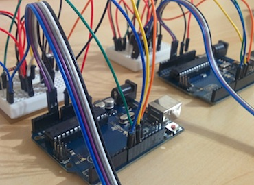
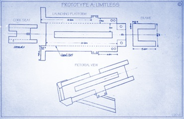

The circuitry for the Arduino boards
The requirements for the launcher included a joystick, linked to an Arduino, which is used to control a maximum of three servos;
these servos are used to adjust the launcher’s pitch and yaw angle, along with releasing the trigger to shoot the payload.
The circuitry for controlling all three servos, along with the software, were provided and encouraged to be modified.
I was responsible for understanding the circuitry and software,
along with adjusting them to allow extra flexibility in our design options.
During the design weeks many teams had to work outside of the given lab time;
I had to ensure participation and cooperation between my fellow team members by managing team
communication and establishing meetings outside of class time.

A sample design schematic for Limitless
Together with my group, we proposed two design models and split into two separate sub-teams to begin work.
The first proposed design, used all of the three servos provided in order to control the trigger, pitch, and yaw angles.
Due to its freedom of controlling the angles, this launcher was codename Limitless.
The second launcher, which I worked on, was designed to be unique compared to all of the rest.
Instead of using all three servos to have more flexibility, we physically restricted the pitch angle of the launcher
and only used two servos -one for the trigger and the other to adjust the yaw angle.
To complement the first design’s codename, I named this launcher Limited Edition.

A sample design schematic for Limited Edition
In order for Limited Edition to be capable of shooting at all four targets, we needed a new way of adjusting the launcher’s firing range.
Since we cannot adjust the pitch angle we were forced to adjust the tension from the rubber bands.
The design for this included a “tension selector” which essentially provided a way to hook the rubber band at
three different locations for different tension strengths.


{kind=link}
{kind=link}
{kind=link}
{kind=link}